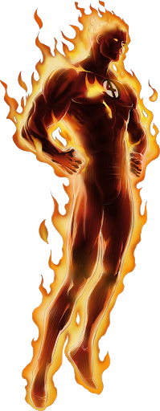
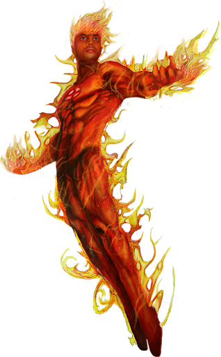

 Like the rest of the Fantastic Four, Jonathan "Johnny" Storm gained his powers on a spacecraft bombarded by cosmic rays. He can engulf his entire body in flames, fly, absorb fire harmlessly into his own body, and control any nearby fire by sheer force of will. "Flame on!," which the Torch customarily shouts when activating his full-body flame effect, has become his catchphrase. The youngest of the group, he is brash and impetuous in comparison to his reticent, overprotective and compassionate older sister, Susan Storm, his sensible brother-in-law, Reed Richards, and the grumbling Ben Grimm
 Johnny Storm and his older sister, Sue, lived uneventfully on Long Island until their mother, Mary Storm, died in an automobile accident. Their father, Franklin Storm, a doctor, failed to save her. Despondent, Franklin descended into booze and gambling, eventually winding up in a penitentiary for murder.[21] The children went to live with their aunt Marygay. Growing up in suburban Glenville, Johnny Storm was drawn to automobiles, despite his mother's death in a car accident, and became quite a mechanic at a young age. While still a teenager, he selflessly rescued two of his friends from a burning building. No stranger to adventure, Johnny was nearly chosen as the human host of the demonic Zarathos, and was attacked by the legendary St. Germaine, who sought the power for himself. Johnny escaped the lure of Zarathos with the help of archaeologist Max Parrish, the uncle of Cammy Brandeis, on whom Johnny had a bit of a crush.
About Me Refrence
Early Years Refrence